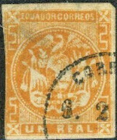

Return To Catalogue - VF Cancelled forgeries
Note: on my website many of the
pictures can not be seen! They are of course present in the
catalogue;
contact me if you want to purchase the catalogue. /p>
I've often seen the forged cancel "CORREOS 7.1.60. II-III" on forgeries of different countries (mostly Latin American countries). I don't know who made these forgeries.
The forged cancel "CORREOS 7.1.60. II-III" also appears on other forgeries of Argentina, Uruguay, Honduras, Venezuela, Colombia, Brazil, Buenos Aires, Peru, Spain, Cuba, etc. They were most likely made by the same forger. Examples:


Forgeries from Cuba, the central one has the "CORREOS
7.1.60. II-III" cancel


Forgeries of Argentina with the same cancel.
Similar forged cancels but with a different date:
